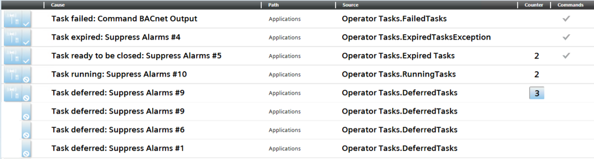

Operator Tasks Reminders in Event List
The Desigo CCFlex client generates information or status events in Event List when:
Task Status | Reminder in Event List | Notes |
|
| When a task is deferred or a new task is running, the relevant event is automatically cleared from Event List when the task status changes. |
|
| |
|
| These events disappear from Event List when you acknowledge them and close the relevant tasks. |
|
| |
|
|
In Event List, such events are grouped together under the corresponding parent event.
- Each parent event acts as a container of the corresponding events.
- The Counter column indicates the total number of occurred notifications per type.
This counter automatically increments whenever the same event occurs.

In case of revert actions, when the revert command is executed the event is cleared from Event List, and a new event is generated depending on the task status.

Depending on subsystem configuration, it might be required to manually clear the event from Event List.